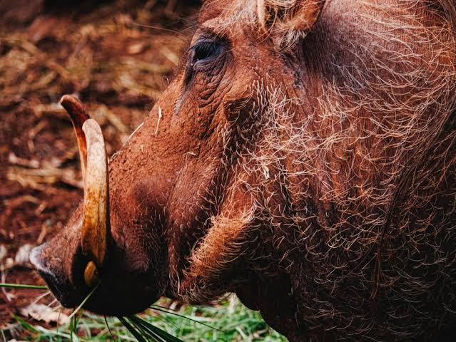
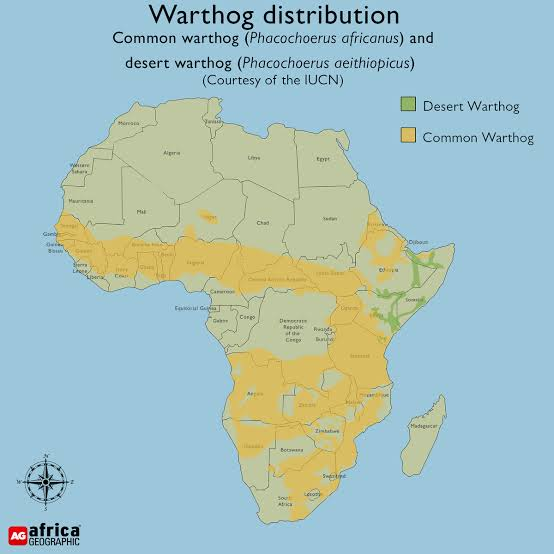
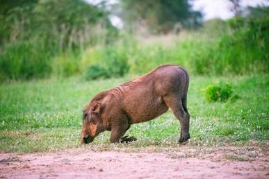
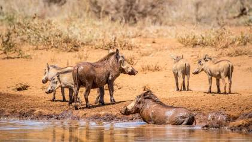
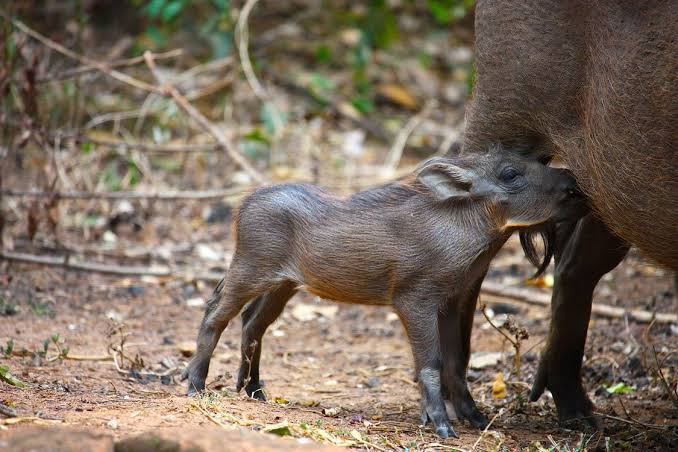
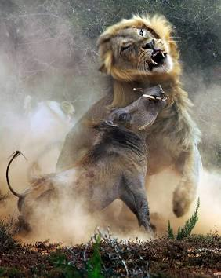

<!DOCTYPE html>
<html lang="en">
<head>
    <meta charset="UTF-8">
    <meta name="viewport" content="width=device-width, initial-scale=1.0">
    <title>Warthog Dossier</title>
</head>
<body>
    
</body>
</html>

<header>
<h1>Species Page: Warthog</h1>
</header>

<nav>
    <ul>
<li><a href="african-adventure.html">Home</a></li>
    </ul>
</nav>

<main>
    <article>
        <section id="basic-info">
            <h2>Scientific Information</h2>
            <p><strong>Common Name:</strong> Common Warthog</p>
            <p><strong>Status/Conservation:</strong> Least Concern <sup><a href="#ref1">[1]</a></sup></p>
            <section id="classification">
                <h2>Full Scientific Classification</h2>
                <table border="1">
                    <tr><th>Taxonomic Rank</th><th>Classification</th></tr>
                    <tr><td>Kingdom</td><td>Animalia</td></tr>
                    <tr><td>Phylum</td><td>Chordata</td></tr>
                    <tr><td>Subphylum</td><td>Vertebrata</td></tr>
                    <tr><td>Class</td><td>Mammalia</td></tr>
                    <tr><td>Subclass</td><td>Theria</td></tr>
                    <tr><td>Order</td><td>Artiodactyla</td></tr>
                    <tr><td>Family</td><td>Suidae</td></tr>
                    <tr><td>Genus</td><td>Phacochoerus</td></tr>
                    <tr><td>Species</td><td>Phacochoerus africanus</td></tr>
                </table>
            </section>
         <section id="physical-profile">
            <h2>Physical-profile</h2>
            <dl>
               <dt>Size range</dt>
               <dd> Head and body length measures 3.5 to 5 feet (1 to 1.5 meters), with a shoulder height of 22 to 33 inches (55 to 85 cm). </dd>

               <dt>Weight</dt>
               <dd> Weighs 110 to 330 pounds (50 to 150 kg), with males typically larger than females.</dd>
               <dt>Identification Markings</dt>
               <dd>Identification Markings: Flat, oversized heads adorned with distinctive wart-like facial protuberances (thickened skin pads for protection during fights), sparse bristly hair, and prominent upward-curving tusks.  
                <sup><a href="#ref2">[2]</a></sup></dd>
           </dl>
           
       </section>
       <section id="habitat-geography">
        <h2>Habitat & Geography</h2>
        <p>Habitats: Grasslands, savannas, and open scrub woodlands, avoiding hyper-arid deserts and dense forests.
            Distribution: Widely distributed throughout sub-Saharan Africa.</p>
<h3>Distribution Map</h3>

        </section>
<section id="ecology and behavior">
    <h2>Ecology and Behavior</h2>
<h3>Feeding and Diet</h3>
<p>Omnivorous grazers feeding on grasses, roots, berries, bark, and occasionally carrion, often kneeling on their front wrists while digging or feeding.</p>
<ul>
    
</section>
<section id="communication and social behavior">
    <h2>Communication and Social Behavior</h2>
    <p>Living in small family groups called sounders consisting of females and their young, communicating through grunts and snorts, and backing into underground burrows tail-first for defense.</p>
    
</ol>
<h3>Life Cycle and Breeding Behaviors</h3>
                <p>Females give birth to litters of 2 to 4 piglets after a 5 to 6 month gestation period, nursing them safely inside protective subterranean burrows.</p>
                
            
            
                <section id="Predators">
    <h2>Predators</h2>
    <p>Large apex predators including lions, leopards, cheetahs, spotted hyenas, and large crocodiles actively hunt adult warthogs and vulnerable piglets.</p>
    
</section>
    </article>
</main>